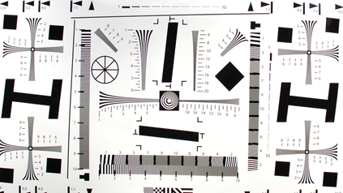
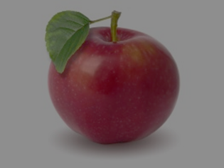

In general, PDAF monitors the scene for changes and triggers a search if the following conditions are met:
If these conditions are met, then PDAF triggers a search. If not, then PDAF continues monitoring the scene or, in some conditions, switches to contrast AF.
The phase difference is computed and converted to a defocus value to indicate the size and direction of the lens movement required to achieve focus. A positive defocus value means that the movement is from near to far. A negative defocus value means that the movement is from far to near. When the defocus value is close to zero, it means that the target is in focus.
The defocus value is calculated as follows:
AF defocus value (um) =
Final PD value (pixel) * DCC (DAC/pixel) * VCM Sensitivity (um/DAC)The confidence level is a function of the number of clues (e.g., vertical edges, scene brightness) in the scene that is used in the phase difference estimation. A high confidence means that the PD in the ROI has a small variance and a higher edge intensity. The confidence table is used to define a minimum confidence threshold relative to the sensor gain.
|  |  |
| High confidence: bright scene and multiple vertical edges | Lower confidence: low-light scene and few vertical edges |
The stability is calculated by evaluating the defocus value history. If the values are within a tunable threshold, then the scene is considered stable.